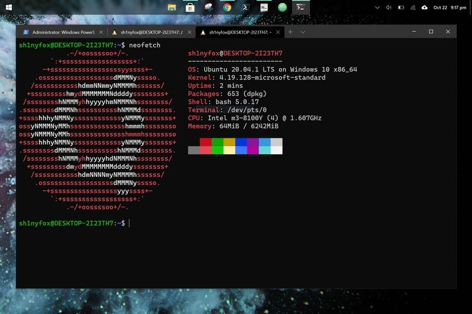

Source: Windows Central
Microsoft dropped plenty of jaws when it launched the Windows Subsystem for Linux, a way to run actual Linux inside Windows without the need to set up a virtual machine. The project has seen a ton of support, and WSL2 is the latest and greatest.
It takes things a little further and adds yet more awesomeness to the Linux experience on Windows 10 and Windows 11. If you haven't yet checked it out, here's how to get started.
Simplifed setup of WSL2 on Windows 10 and Windows 11
 Source: Windows Central
Source: Windows Central
There is now a new, extremely simplified way to get WSL2 up and running on your Windows 10 and Windows 11 PC. The only requirement is that you're running version 2004 of Windows 10 and above. If this sounds like your system, ensure you've also downloaded the optional KB5004296 update, too, as it's the one that enables this feature.
Once this is in place, open up PowerShell and enter this command:
wsl --install
That's it. The setup process will begin and you can relax until it's finished.
If you don't have the necessary version of Windows 10 installed to follow the simplified setup, the existing, much longer method still works.
How to enable Windows Subsystem for Linux
Before you can get WSL2, you need to have WSL. That may sound slightly strange, but the methods of enabling the first iteration and the second are quite different. But to have the newest version, you first need to have the first. There's no direct path to just installing WSL2.
We have a full guide on getting set up with the Windows Subsystem for Linux, which you should check out for a full primer on getting started, but if you're looking for the quickest route, there's a single line of code to enable it on your machine.
Open PowerShell as administrator and enter this command:
dism.exe /online /enable-feature /featurename:Microsoft-Windows-Subsystem-Linux /all /norestart
Eventually, you will need to reboot your PC, but you can leave it until later if you're going straight to installing WSL2.
How to install WSL2 on Windows 10
 Source: Windows Central
Source: Windows Central
Now you have the Windows Subsystem for Linux enabled. It's time to download and install WSL2. The latest iteration is essentially a tiny virtual machine that boots up in seconds and has a proper Linux kernel at its core. And that's why the installation differs a little from enabling regular old WSL.
There are also a couple of pre-requisites for using WSL2 on Windows 10. You need to be on the following versions:
- For x64 systems: Version 1903 or higher, with Build 18362 or higher.
- For ARM64 systems: Version 2004 or higher, with Build 19041 or higher.
If you have anything lower, you'll need to run Windows Update before going any further.
Assuming that's all good, the rest is straightforward.
Enabling Virtual Machine
If you don't already have this enabled, you'll need to turn it on before installing WSL2. As already stated, WSL2 is a tiny virtual machine, so Windows needs to be prepared for that. If you have this enabled already, skip and go straight to rebooting your PC to make sure you're ready to install.
The quickest way to do it is in PowerShell. Open PowerShell as administrator and enter this command:
dism.exe /online /enable-feature /featurename:VirtualMachinePlatform /all /norestart
Now reboot your PC and move to the next section.
Downloading and installing WSL2
The next part takes only a couple of steps.
- Download the WSL2 Kernel update.
- Run the installer.
- When prompted for elevated permissions, click yes.
Once the installer has done its thing, you'll now have WSL2 successfully installed on your PC.
Setting WSL2 for your Linux distros
The good thing about WSL2 is that it doesn't replace WSL. It just runs alongside it. This means you can run Linux installs with a combination of different versions. You're able to set either as default as well as setting a version specifically to each Linux distro you have on your PC.
Let's break down some of the key commands to use in PowerShell that you'll need to know.
Setting WSL2 as default
 Source: Windows Central
Source: Windows Central
If you want everything to run on WSL2 as soon as you install it, you can set it as the default version.
wsl --set-default-version 2
Listing installed Linux distros and their WSL version
 Source: Windows Central
Source: Windows Central
With WSL2 set as default, any Linux installs after that will use it automatically. You can easily check which version of WSL your installed Linux distros are using.
wsl --list --verbose
Using the verbose flag will give you the breakdown of which version of WSL is attached to which Linux installation. Without it, you'll simply get a list of the versions of Linux you have installed.
Changing the version of WSL per Linux installation
 Source: Windows Central
Source: Windows Central
While setting WSL2 as default will apply it to anything you install afterward. If you're already set up, you'll need to manually convert. Likewise, if you wish to go between versions 1 and 2 or run a mixture on your system, you can do that.
wsl --set-version <distribution name> <versionNumber>
So, as an example, if you have a Debian installation on WSL that you need to convert to WSL2, you'd enter wsl --set-version debian 2.
Launch specific Linux installations in PowerShell
 Source: Windows Central
Source: Windows Central
If you only have one version of Linux installed, simply typing wsl in PowerShell will launch you into the associated bash shell. But if you have multiple, you can launch a specific distro with this command.
wsl -d <distribution name>
Once you're done, typing exit will take you back into PowerShell.
From here on out, you're ready to go forth and install all the Linux you want. Our full guide will help you along the way, but once WSL2 is set up how you like it, it just fades into the background.
It's also worth grabbing the Windows Terminal app from the Microsoft Store if you're using WSL. While you can just use the standard terminal installed with each or launch through PowerShell as shown above, Windows Terminal has a neat tabbed interface that lets you run multiple shells at once. Have PowerShell, Linux, Azure Cloud Shell, even Command Prompt, all open together side-by-side in one window.
Fancy terminal
Windows Terminal
Microsoft's new modern, open-source terminal application.
Whether you're into theming or just want to run a bunch of different shells side-by-side, the Windows Terminal application can do it all.
We may earn a commission for purchases using our links. Learn more.
How to install Linux WSL2 on Windows 10 and Windows 11
When will we be able to actually run Linux GUI Apps on Windows 10 as promised by Microsoft some months ago?
That would be the old favorite
Soon™
What they showed off at XDC last month was looking good, though I can't remember what the completion status and timeline were.
Aye there's a workaround you can employ for now that essentially involves installing xfce and using the built in rdp software on Windows 10 to run a full Linux desktop, but it's definitely coming along officially.
There's a well rated free app on the Microsoft Store called GWSL that seems to automate everything. Haven't tried it though. And several others with mixed reviews claiming similar capabilities.
It's actively being worked on right now, and Microsoft showed off a preview last month at the XDC (X Developers Conference I think?) last month. Don't know if links are allowed, but you can find it here (with timestamp):
https://www.youtube.com/watch?v=b2mnbyRgXkY&t=7980s
Can't remember from the video if there's a projected release date/when it comes to insider builds if it's not there already.
It's available now with WSLg in the latest insider builds, hope it hits GA soon. It's pretty slick! (Just mentioning this for anyone else finding this article)